ON / OFF
ON / OFF の操作で BIT 値を書き込みます。
Device Control Panel
リスト／ブロックで選択したデバイスの現在値確認、書込、タイムチャート／トラップへの追加を行います。
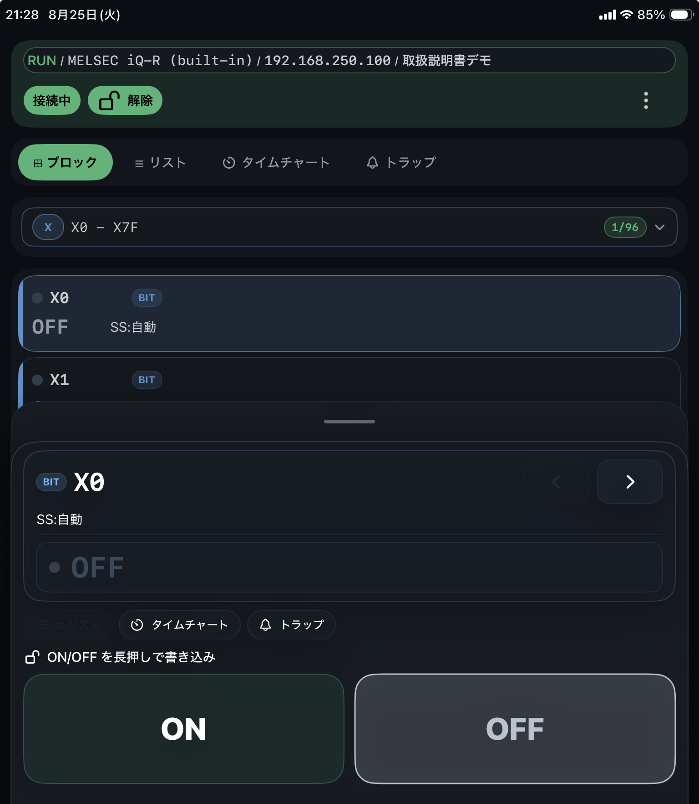
ON / OFF の操作で BIT 値を書き込みます。
上部の書込ロックを解除してから操作します。ロック中は書込操作が無効になります。
ビット書き込み設定が長押しの場合、進行表示が完了するまで押し続けます。
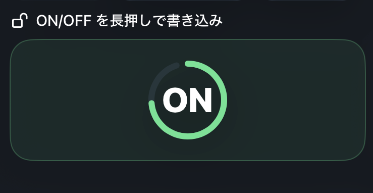
Int16、UInt16、Int32、UInt32、Float32 を選びます。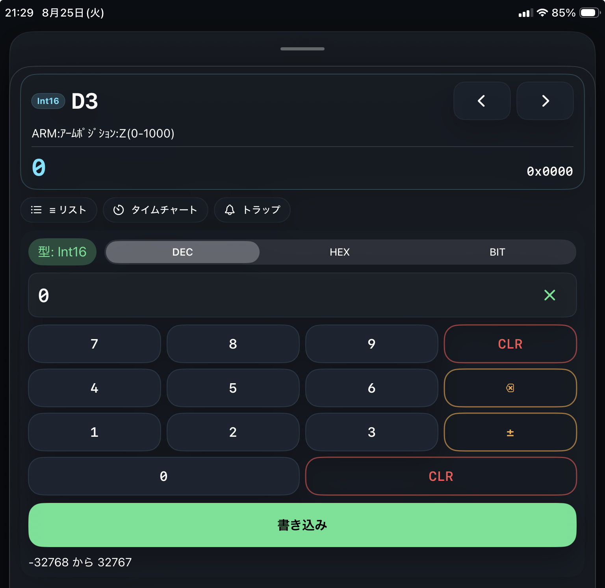
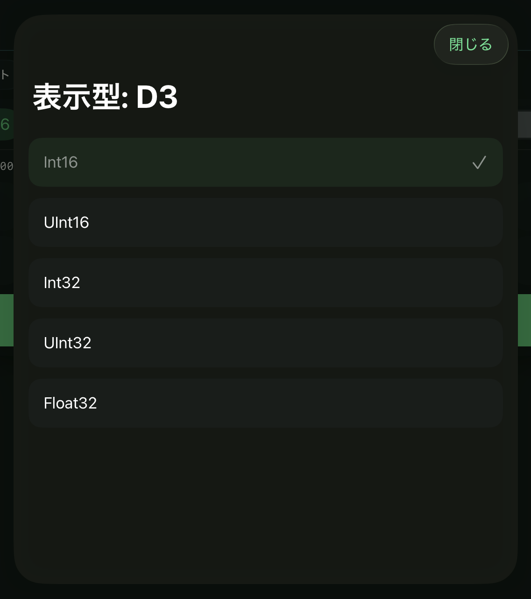
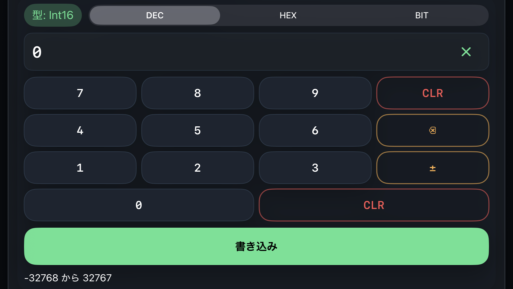
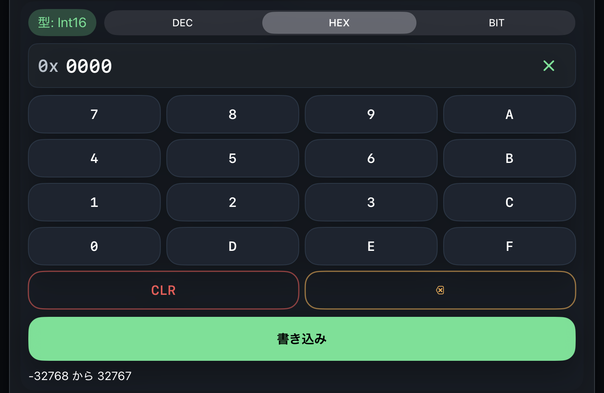
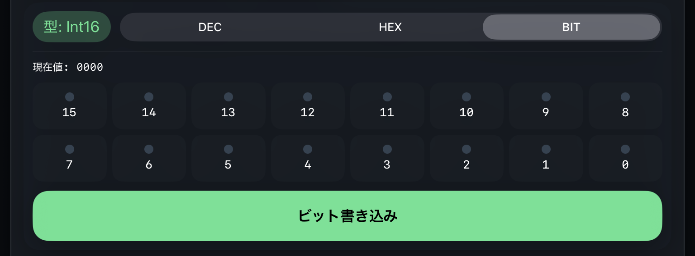
対象 PLC、アドレス、データタイプ、書込値が正しいことを確認してください。
別のプロジェクトを開いた場合、または新規プロジェクトを作成した場合は自動でロックへ戻ります。同じプロジェクトの設定保存、開き直し、切断、再接続、通信復旧では解除状態を維持します。
未接続などにより現在値が -- のデバイスには書き込めません。接続後、現在値が表示されたことを確認してください。
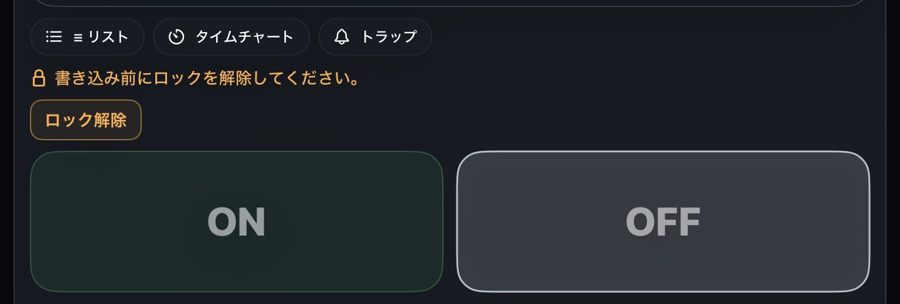
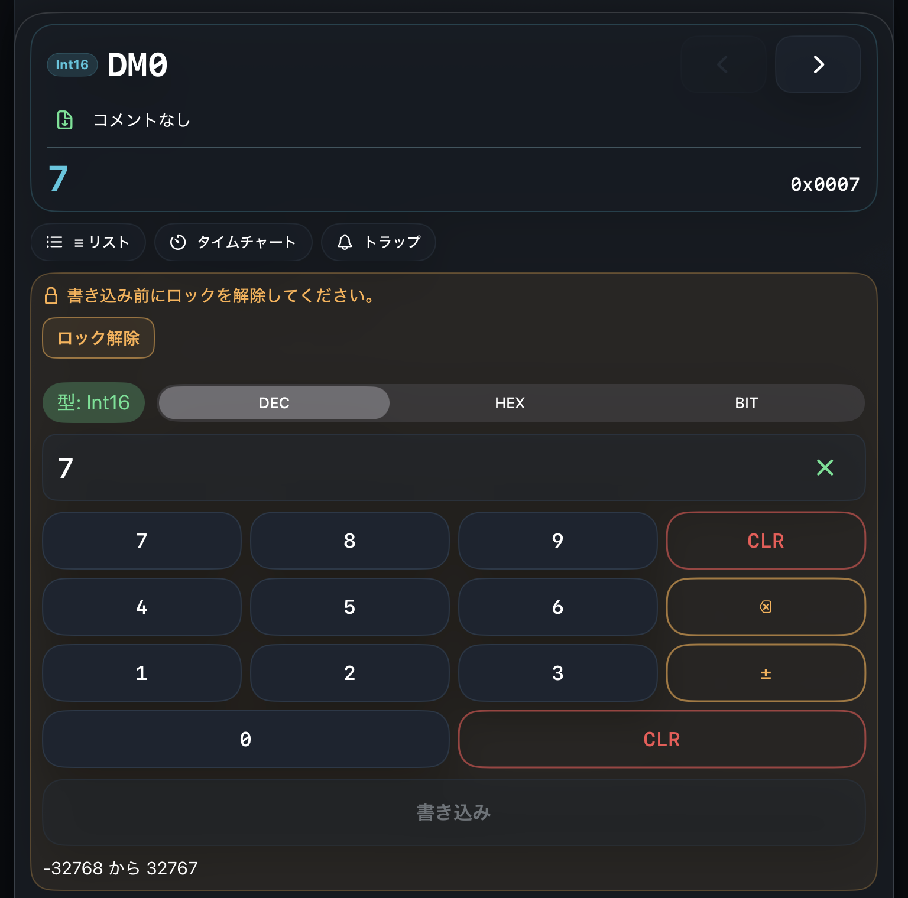
書込に失敗した場合は、接続状態、書込ロック、アドレス、データタイプ、エラー履歴を確認してください。
出力デバイスを操作する場合は、CPU を MELSEC では PAUSE、KEYENCE では PROGRAM 状態に変更してから書込してください。
MELSEC では STOP 状態だとリモート I/O へ出力が転送されないため、プログラムだけを停止させる PAUSE を使用してください。
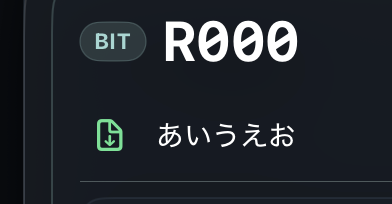
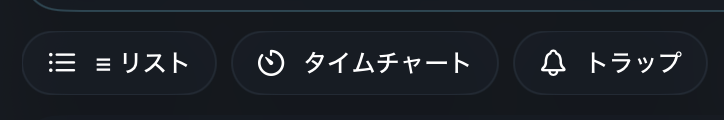